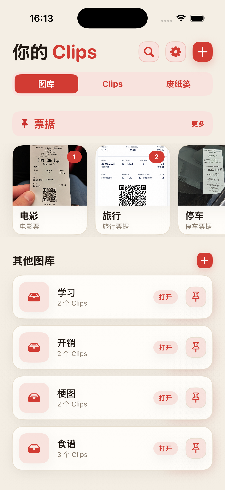
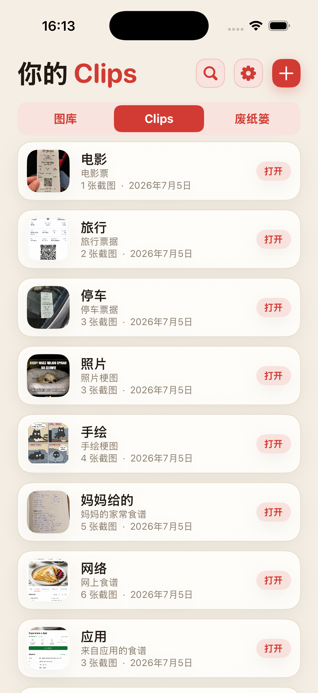
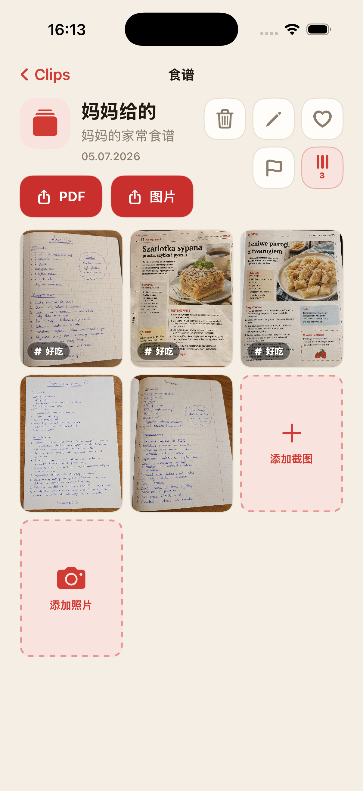
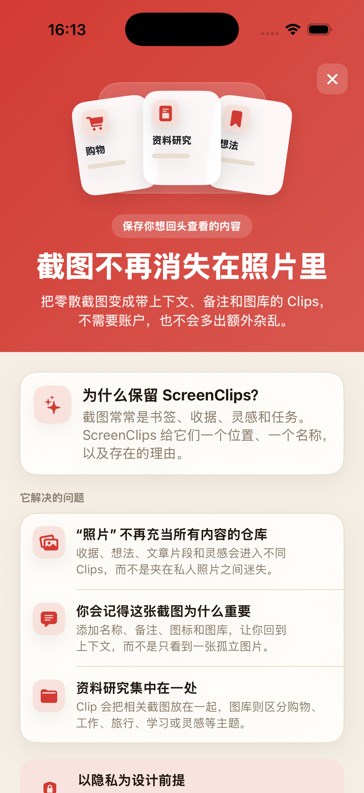

截图很快被淹没
你保存了重要信息，一周后却在相册里反复滑动，像在翻一堆旧档案。
把散落的截图变成带名称、备注和专属资料库的 Clip。不用注册账号，不用上传云端，也不用每天在相册里翻半天。

收据、食谱、票据、灵感和文章片段，常常和自拍、梗图、随手拍混在一起。云端可以同步一切，但上周酒店地址那张截图还是可能找不到。
你保存了重要信息，一周后却在相册里反复滑动，像在翻一堆旧档案。
单独一张图往往不够。ScreenClips 给每个 Clip 留出名称和备注。
购物、工作、旅行和学习应该各有位置，而不是全部堆在“照片”里。
把食谱、收据、票据、研究、学习笔记，或任何想再次找到的内容放到对应主题里。
Clip 围绕一件具体的事组织内容。它可以有名称、描述和自己的截图。
打开资料库，选择 Clip，之前保存的内容就放在一起。

ScreenClips 不替你胡乱猜测。它只提供简单结构：主题用资料库，具体事情用 Clip，截图和图片放在里面。
把相关素材放进 Clip，主题继续发展时再追加。
当你想发送或在 app 外保存时，把 Clip 变成易读文件。
收藏、旗标和顺序，把原来的无尽滚动变成可回来的入口。

ScreenClips 在本地运行。整理截图不需要创建账号，也不必把收据、备注和计划交给另一个服务。
Premium 不会让 app 变复杂，只是给资料库、Clips 和截图更多空间。价格以 App Store 显示为准。
在App Store 下载
不会。从 Clip 中移除图片，只会移除 ScreenClips 中的副本，原图仍留在“照片”里。
可以。ScreenClips 设计为 iPhone 上的本地整理工具。
不需要。整理 Clips 不需要账号。
可以。只要它们属于同一个 Clip，就可以把截图和照片放在一起。